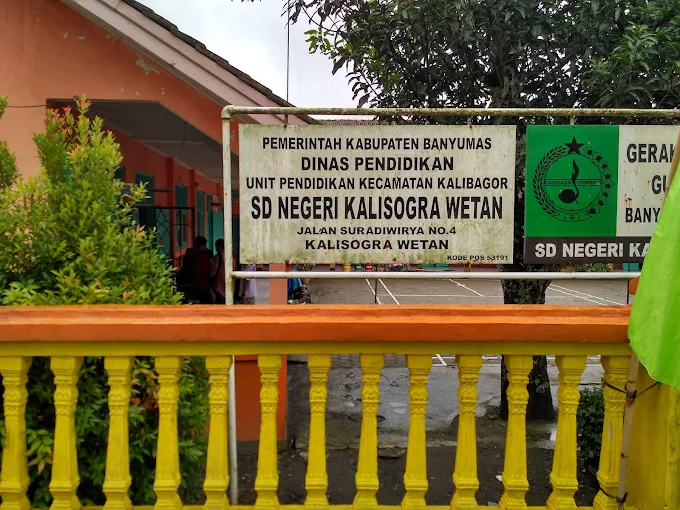
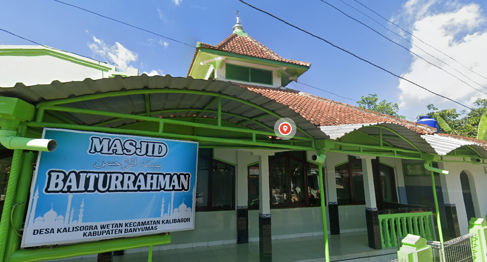
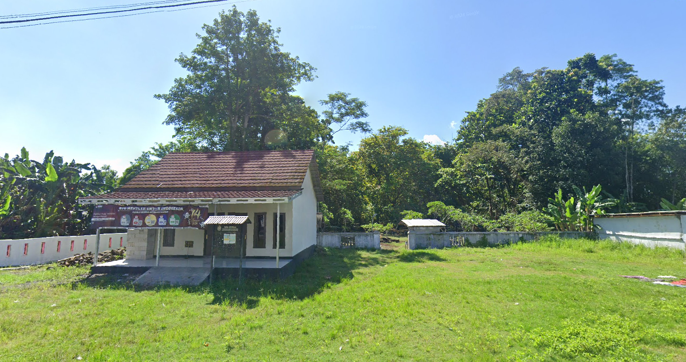
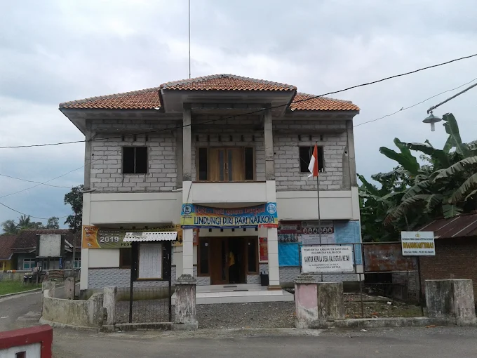

Tentang Desa
Profil Desa Kalisogra Wetan
Desa Kalisogra Wetan merupakan desa kecil yang terletak di ujung utara Kecamatan Kalibagor, Kabupaten Banyumas. Meskipun secara administratif tercatat sebagai salah satu desa dengan luas wilayah terkecil di wilayahnya (sekitar 0,54 km²), desa ini memiliki kepadatan komunitas yang erat dengan populasi sekitar 1000 jiwa. Kehidupan masyarakatnya mencerminkan keharmonisan budaya Jawa Banyumasan yang kental, di mana nilai-nilai gotong royong masih terjaga kuat.
Peta Administrasi Desa
Mode Layar Penuh: Peta Desa Kalisogra Wetan

Data Administratif
- Kode Desa33.02.10.2012
- Kepala DesaAgus Priyanto
- Jumlah RT/RW06/02
- Tahun Data2024
Batas Wilayah
Utara
Desa Banjarsari Sokaraja
Selatan
Desa Kalicupak Lor
Timur
Desa Kalicupak Kidul
Barat
Desa Karangduren Sokaraja
Fasilitas Umum

• SD Negeri Kalisogra Wetan

• Masjid Baiturrahman
• Mushola Al-Huda

• TPU Kalisogra Wetan

• Kantor Balai Desa Kalisogra Wetan